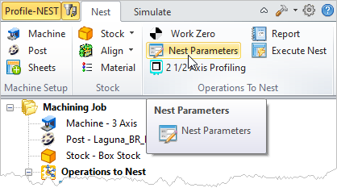
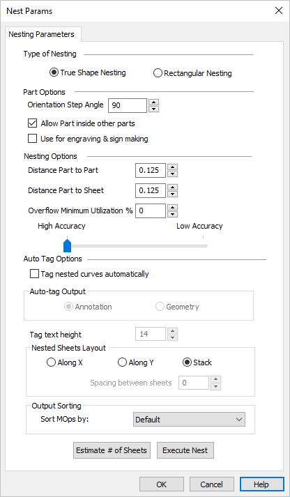
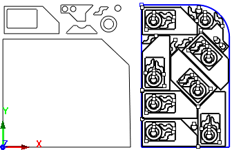
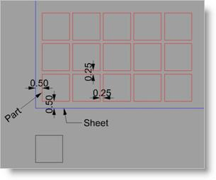
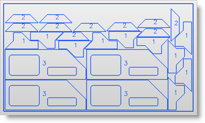
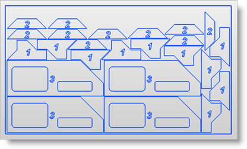
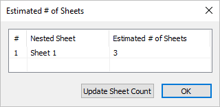

This dialog is used to define the sheets in your nest. It is divided into two parts. The Sheets List at the top and the Sheet Definition at the bottom. Defining a sheet and then selecting the Add Sheet(s) button will create the sheet and add it to the list. Once listed, you can further control parameters for the sheet defined by each column in the list. Refer to each option listed below.
 |
 Neting Parameters |
TrueShape Nesting This method is useful when the actual geometric details of the part are taken into consideration while nesting. True shape nesting enables interlocking of parts, recognition of arbitrary shaped sheets.  True Shape Nesting Example Rectangular Nesting This method is useful for nesting of parts on rectangular sheets. This is ideal for those nesting mostly square and rectangular profiles. For all part shapes, an imaginary rectangle is drawn around the shape and then the rectangles are laid side-by-side.  Rectangular Nesting Example |
This section controls how toolpaths are grouped and oriented. Orientation Step Angle This allows rotation of the parts to nest and can be defined by specifying orientation step angle. For example, specifying a Step Angle of 90 would allow rotation of all parts by a step increment of 90, which could be 90, 180 or 270 to fill the sheet optimally.
") Orientation Step Angle (True Shape Nesting) Allow Parts inside other Parts Check this box to allow parts to be nested inside the cutouts of other parts to maximize sheet utilization.
Use for Engraving & Sign Making Check this box to use nesting for engraving & sign making. This allows the ability to nest curves inside a hole as shown below. In this example, the outer rectangle would be the part and the exterior & interior of the letters would be treated as holes. Use for engraving & sign making |

This section controls distances and accuracy of the nested toolpaths. Distance Part to Part This parameter defines the minimum distance between each part within a sheet. In the example below, Distance Part to Part is set = 0.25. and Distance Part to Sheet= 0.  Distance Part to Part Distance Part to Sheet This parameter defines the minimum distance between parts to the edge of the sheet. In the example below, Distance Part to Part is set = 0.25. and Distance Part to Sheet = 0.50.  Distance Part to Sheet Overflow Minimum Utilization % This defines the minimum percent of material utilization that is permitted on any sheet in the nest. If set, then the % of utilization of material for each sheet must exceed this value. If the % of utilization for any sheet is below this value, that sheet will be suppressed from the nest.
Accuracy Move this slider to adjust the Simulation Accuracy (Standard, Medium and Fine). This refers to the display accuracy. For example, in Polygonal Mode, more polygons will be added, thus increasing display accuracy. |
Use this section to auto tag your nested toolpaths. Tag Nested Curves Automatically Tagging allows you to identify nested parts. Check this box to turn Tagging On. Auto Tag Output Annotation - The tag number is shown on the screen as graphics display text only. The height of the annotation text is dynamically controlled by the Tag Text Height value.  Annotation Tagging Geometry The tag number is created as geometry curves, which are selectable as geometry. Enter the Tag Text Height for tagging.  Geometry Tagging Tag Text Height This value is the Text Height for each generated Tag. When Annotation is selected, the Tag is only displayed graphically on the screen using the Text Height value. When Geometry is selected, the Tag geometry will equal the actual Text Height value. |
Use this section to define the layout of the nested sheets. Along X Pick Along X to layout the nested sheets along the X direction (left to right) beginning at the XY origin. Along Y Pick Along Y to layout the nested sheets along the Y direction (bottom to top) beginning at the XY origin. Spacing between Sheets If either Along X or Along Y is selected, enter a distance value for the Spacing Between Sheets. |
Use this section to determine how the machining operations (Mops) are listed in the Machining Job tree. The sorting is performed within each nested sheet folder in your Machining Job. Sort Mops by Select a sorting method: Default Mops are sorted in the order they appear in your Operations to Nest setup. Tool Size ASC Mops are sorted by ascending tool size (smaller tool diameters first). Tool Size Mops are sorted by descending tool size (larger tool diameters first). |
Select this button and the system will estimate how many sheets are needed and allow you the opportunity to update your sheet count.
 Estimate # of Sheets |
Pick Execute Nest to calculate the final Nest based on all parameters and selections you have made. You are then moved to the Preview Nest tab automatically. |